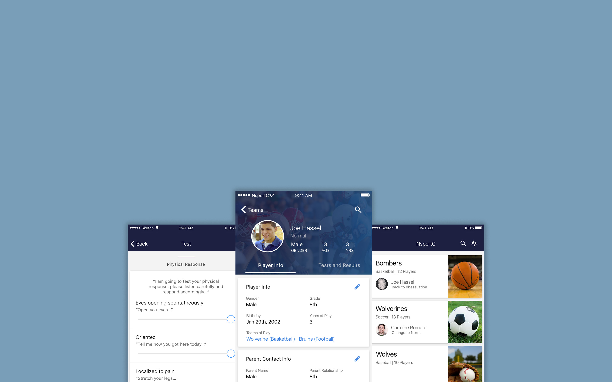

UX Design for a Sports Management Platform Which Focuses on Concussions
UX Design
Cross-platform Design
UX Designer
User Researcher
Fei Ren, Lola Jiang, Shen Wang
Bicheng Xu, Courtney Luk
NSportC is a combination of web and mobile app that helps middle school and high school coaches handle potential concussions in the right way. Furthermore, NSportC will also help teenager sports players and their parents keep pre-medical information.

Timeline and Methods
In high school sports teams, players can easily fall down and might get concussion. However, how to tell if a player is still healthy to play or is in suspicion of concussion is very hard for high school coaches since there is no professional medical teams in high school. In addition, it is hard to manage player's physical conditions and previous concussion records. Therefore, NSportC is very helpful in handling these conditions.

In addition, in our research, we find two major legal regulations:

To find what parents and coaches need when dealing with potential concussions, we interviewed with two coaches, Joe and Max. Both of them have been high school coaches for over 10 years, and they have children that play in high school teams.
Major Findings:
For our primary persona type, we developed two personas varying by their coaching experience. A more experienced coach may have more awareness of each player's health status, while a less experienced coach may miss important indicators that a player's health status is unstable, which is the reason for adding the team management function. On the other hand, both types need a standardized assessment tool to tell if a player is still healthy.
Parents care about children's health as well as how they recover from the concussion. In addition, they play an important role in helping recording children's recovery.
We researched on concussion training materials and asked opinions from experienced coaches. We concluded the following questions for a quick and accurate assessment.
Coaches Suggested the Total Assessment Time Should Be less than 5 Minutes.
Using our primary persona - coach's role - as a breakthrough point, we created workflow diagrams to visualize the users end-to-end experience and map the product workflow. We decided to put the more sophisticated team management tools on the web platform, while the mobile app covers the assessment tool, since coaches only have smartphones with them during games or practices.
The web app is mainly designed with emphasis on information management. Coaches will be able to view all players' status and previous assessment test results. In addition, coaches can print out reports based on his players' status.
The mobile has an emphasis on the assessment tool exclusively. To simplify the process and save time, the coach will be able to quickly access the assessment tool on the main page and then select the player associated with the test.
Coaches Registration and Creating Teams
Parents Registration via Coach's Invitation
The dashboard page serves as a central information hub. Coaches can manage (view, edit, and delete) all the teams.
The team page shows the list of players in this team. Coaches can change team names and add/delete players.
A player's information can be divided into two parts - demographical information and test results. The coach will be able to edit a player's demographical information as well as view or export all previous test results.
After finishing all assessment questions with 3 minutes (less than 5 minutes), the mobile app will determine whether the test is passed or failed. If the test is failed, our product will advice the coach to immediately send the player to medical professionals for further diagnosis.
This is the mockup for browsing player information and previous test results.

This is the mockup for conducting 5-minute assessment for player who is in suspicion of concussion.
We did well in:
What's next: